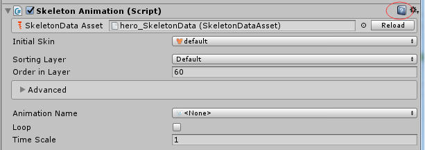
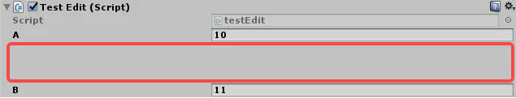

● Article
Paragraph
Paragraph
1、没有骨骼根节点时：比如只是一个Cube立方体，如果勾选了ApplyRootMotion，运行后不会播放动画，因为应用了骨骼根节点的运动参数，而没有骨骼根节点，就没有动画了。即便是在代码中强行调用Animator.Play("rotation")方法也不会播放动画。
2、有骨骼根节点时：一旦设置了这个变量为true，那么请一定注意，这个会对物理引擎在模拟对象的运动轨迹时产生直接的影响，例如在某个动画A中，对象只向Y轴方向进行了移动，在X和Z轴是静止的，那么我们在播放A动画的时候，如果使用Rigidbody设置速度或者施加外力，还是不会让物体在X和Z轴上发生位移的。这是因为，在整个动画播放的过程中（例如0.5秒），Animator会根据动画中物体的位移信息对物体的速度进行赋值，这样达到使用骨骼根节点的位移的效果，也就是说，我在播放动画过程中的任意时间给物体设置了X或者Z轴方向上的运动速度，后续的动画播放帧中，速度又会被Animator强制赋值为跟动画文件中的位移信息一致。
1、Always Animate（始终处于动态）：即使在屏幕外也不进行剔除
2、Cull Update Transforms（剔除更新变换）：当渲染器不可见时，将禁用变换的重定目标、IK和写入
3、Cull Completely（完全剔除）：当渲染器不可见时，动画将完全禁用
获取组件：GetComponent<类型>()
| 类别 | 组件 | 类名 | 作用 |
| 基础 | 变换 | Transform | 控制物体的位置、旋转、缩放 |
| 物理 Physics |
刚体 | Rigidbody | 给物体赋予物理特性，使物体可以受力作用，模拟真实运动 |
| 碰撞体（2D/3D） | Collider/BoxCollider/... | 检测、实现物体碰撞 | |
| 网格 Mesh |
网格过滤器 | MeshFilter | 挂载物体的网格信息，配合【网格渲染器】使用 |
| 网格渲染器 | MeshRenderer | 对物体进行渲染，挂载材质信息，配合【网格过滤器】使用 | |
| 蒙皮网格渲染器 | SkinnedMeshRenderer | 渲染可变形网格，挂载材质信息 | |
| 渲染 Rendering |
摄像机 | Camera | 用于场景中捕捉画面 |
| 灯光 | Light | 场景中的光源 | |
| 精灵渲染器 | SpriteRenderer | 在场景中渲染精灵 | |
| 杂项 Miscellaneous |
动画器 | Animator | 控制物体在多个动画之间切换状态 |
| 动画 | Animation | 播放动画 | |
| 地形 | Terrain | 生成场景中的复杂地形 | |
| 效果 Effects |
粒子系统 | ParticleSystem | 实现粒子特效 |
| 线条渲染器 | LineRenderer | 实现多点之间的连线 | |
| 音频 Audio |
音频源 | AudioSource | 场景的声音来源 |
| 音频接收器 | AudioListener | 接收声音 |
1、鼠标移动
2、鼠标点击
1、键盘移动
2、键盘按键
1、默认地，Unity只给自定义的公有变量、继承自MonoBehaviour的类执行序列化，所以如果想让一个类序列化，那么就要指定[Serializable]标签。它将MetaData放入可以通过反射重新获取并由Unity使用的类中。有了这个Unity知道它应该/可以序列化类。
2、Unity序列化的关键字是 Serializable 和 SerializeField，具体描述可以翻阅API。
蓝色小书的图标，点击以后会跳转到配置的URL

对int或float参数，显示为slider滑动条
1、如果脚本中使用的组件没有添加到物体，自动给物体添加该组件
2、如果已经添加了该组件，则在编辑器中无法删除，避免运行时找不到组件
让一个可被序列化的字段，不要显示在Inspector面板中，防止修改
让MonoBehaviour脚本的所有实例，在编辑模式下可运行
禁止一个组件被重复的添加多次
对于当前物体已经存在的多个该组件，不会改变，但应用了特性以后，无法再次添加
运行时，修改Inspector面板中的字段，会即时返回新的值；
应用Delayed特性，只有在用户按下回车Enter或焦点离开才返回新值
在Inspector中，可以设置多个字段之间的空行

可以在文本域中编辑string字符串，适用于长字符串
参数:
minLines:文本区域最小行数
maxLines:文本区域最大行数，超过最大行数，会出现滚动条
可以在文本域中编辑string字符串，适用于长字符串
参数:
minLines:文本区域最小行数
maxLines:文本区域最大行数，超过最大行数，会出现滚动条
GUI类是固定布局，GUILayout类是自动布局，每种都有自己的排列控件。
具体区别参考GUI - GUI基础 - GUI与GUILayout
大多数 EditorGUI 和 EditorGUILayout GUI 控件已具有与 SerializedProperty 配合使用的重载。
但是，对于不处理 SerializedProperty 的 GUI 控件，您可以按以下所示示例将它们封装到 BeginProperty 和 EndProperty 中。
您也可以将其用于自己的自定义 GUI 控件。
1、GUI类是固定布局，GUILayout类是自动布局，每种都有自己的排列控件。
2、GUI主要是组，组是固定布局模式中的布局规则。
● 为定义组中包含的控件，需要使用 GUI.BeginGroup() 和 GUI.EndGroup()函数。
● 组内的所有控件将根据组的左上角而不是屏幕的左上角进行定位。因此，如果在运行时重新定位组，则将保持组中所有控件的相对位置。
3、GUILayout主要是区域，区域仅用于自动布局模式。
● 为定义区域中包含的控件，需要使用 GUILayout.BeginArea() 和 GUILayout.EndArea()函数。
● 在自动布局模式下，不需要在控制级别定义绘制控件的屏幕区域。控件将自动放置在包含该控件的区域的最左上角。此区域可能是指屏幕。此外也可以创建手动定位的区域。